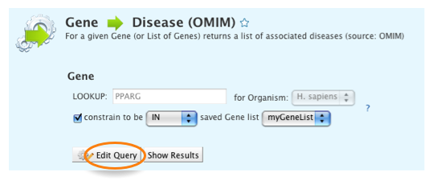
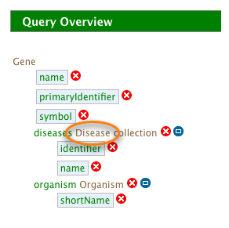
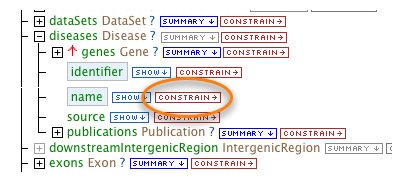
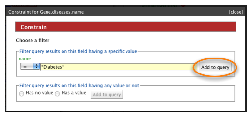
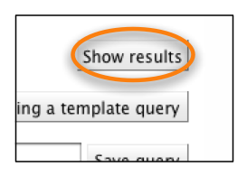

The QueryBuilder is aimed at advanced users and allows you to edit queries or create new ones. The query builder can be accessed through the query builder tab in the top menu bar:
or from the Edit Query button on each template form:

Clicking on Edit query on a template form will take you straight to the query builder. However, if you want to start building your own query you will need to first select a starting point (starting class) for that query:
![[QB Class Selection]](mmQB_ClassSelection.png)
The Query Builder is made up of distinct sections:
![[QB query builder]](query_builder.png)
The pane on the left is a view of the data model starting at the class initially selected and showing all attributes (e.g. name, symbol) and related classes (e.g. organism, Proteins). metabolicMine uses an object based data model - biological types are termed 'classes' and individual entries are termed 'objects'. For example the PPARG and TCF7L2 Genes are both objects of the class Gene.
You can click ![[plus]](plus.gif) to open related classes and see their
attributes. Building a query involves three main steps:
to open related classes and see their
attributes. Building a query involves three main steps:
- Navigating the data model to find the classes and fields of data you are interested in.
- Selecting the data you wish to see in your results.
- Refining your query with a set of constraints or filters.
Use the ![[show]](show.gif) buttons to add fields to the results output and
the
buttons to add fields to the results output and
the ![[constrain]](constrain.gif) buttons to refine your search (aka: add constraints or filters).
buttons to refine your search (aka: add constraints or filters).
The right hand pane shows a summary of the query you are constructing: the fields you have selected to be in your results and the constraints you have added. The lower pane allows you to edit the fields in your results - re-order the columns, remove columns and set the sort order.
To illustrate the use of the Query Builder we will modify a template query. Navigate to the templates page and select the template Gene --> Disease (OMIM)
Now click 'Edit Query' to bring up the QueryBuilder:
The query summary section shows the constraints applied to this query. Notice that one of them says 'IN myGeneList'. This shows us that the search is using only the Genes from the List (myGeneList) that we saved earlier.
What if we want to search for all Genes in metabolicMine for Diabetes Genes? We can just remove the Genes constraint, add a constraint for Disease and run the query again.
Click on the ![[red cross]](cross.gif) button next to 'IN myGeneList''
to remove the constraint:
button next to 'IN myGeneList''
to remove the constraint:
Now, click on the Disease link in the 'Query Overview' panel':
Hint: you can find it in the middle of 'diseases Disease collection'.

As you hover over it you'll see a Tooltip with 'Show Disease in model browser'.
Scroll to the diseases model and find 'name' (It should have a box around it to show that it appears in our query). To the right of 'name' click constrain:
Type *diabetes* in the filter box and Click 'Add to query''
Now scroll down the page and click 'Show results' to run the query:
The results table now shows all the Genes in metabolicMine for which there are known Disease
associations, the name of the Disease and its OMIM identifier. You can use the summary buttons
![[summary icon]](summary_maths.png) on 'Gene > diseases > name' to
find more information about the numbers of Genes associated with each Disease.
on 'Gene > diseases > name' to
find more information about the numbers of Genes associated with each Disease.